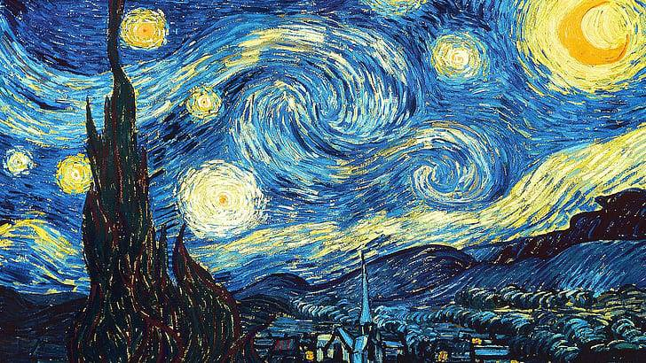

Olá, Líria Bravo
Há algo que preciso dizer, algo que venho carregando por muito tempo. Sinto que é importante compartilhar isso com você agora, pela primeira e última vez.
Desculpe por ter demorado tanto para enviar esta mensagem. Quando perguntaste-me se tinha algum interesse em ti, não fui completamente sincero.
A realidade é que sempre gostei de você e lamento não ter sido honesto desde o início. Mesmo que possa parecer tarde demais, sinto que é essencial expressar o quanto você significou para mim. Saiba que eu me importo muito com você e, independentemente do que aconteça, sempre vou desejar o seu bem. Cada momento ao seu lado foi precioso para mim, e não há nada que eu não faria para ver você feliz.
De certa forma, tu moldaste uma parte de mim, agradeço muito por isso Líria.
No entanto, esses sentimentos que guardo com tanto carinho precisam encontrar um novo lugar, pois sei que você encontrou alguém que te faz feliz. Eu jamais gostaria de atrapalhar a sua vida ou a sua felicidade, e por isso estou escrevendo esta mensagem como uma despedida.
Dizer adeus a ti é uma das coisas mais difíceis que já fiz. Sempre irei carregar a lembrança do que sinto por você.
Espero não ter causado nenhum desconforto. Se isso aconteceu, peço desculpas sinceramente, não foi a minha intenção.
Saiba que, mesmo quando parecer que o mundo está contra você, eu estarei ao seu lado. Desejo que seus dias de trabalho sejam cheios de produtividade e que você descubra felicidade em cada tarefa que realizar.
Espero que tenhas gostado desta paleta/gradiente.
Eu te Lobo e boa noite Líria...
Y'C.
Eu queria ter criado algo verdadeiramente inesquecível como despedida para você, algo que realmente capturasse o quanto você significa para mim. Infelizmente, o que consegui fazer foi apenas isso. No entanto, espero que, de alguma forma, isso consiga transmitir um pouco do que sinto por você. Peço desculpas se não atendeu às minhas próprias expectativas, mas saiba que o esforço e a intenção estiveram sempre voltados para você.
Texto escrito em 20/08/2022
Nunca mais te vi, mas fiquei a saber que viajaste. Há poucos dias apareceste no meu sonho e lembrei de ti. Só queria saber se estás bem e como estão a correr os teus dias, só preocupação. Quero que saibas que estarei aqui para o que precisares. Beijos!

Starry Night
Esta obra captura a essência dos sentimentos profundos e da beleza que pode existir mesmo em tempos difíceis. A pintura de Van Gogh expressa a luta interna e a esperança, assim como a mensagem do texto pretende transmitir um amor que transcende a dor e a separação, revelando a dedicação e o desejo sincero de ver o outro feliz, apesar das adversidades.